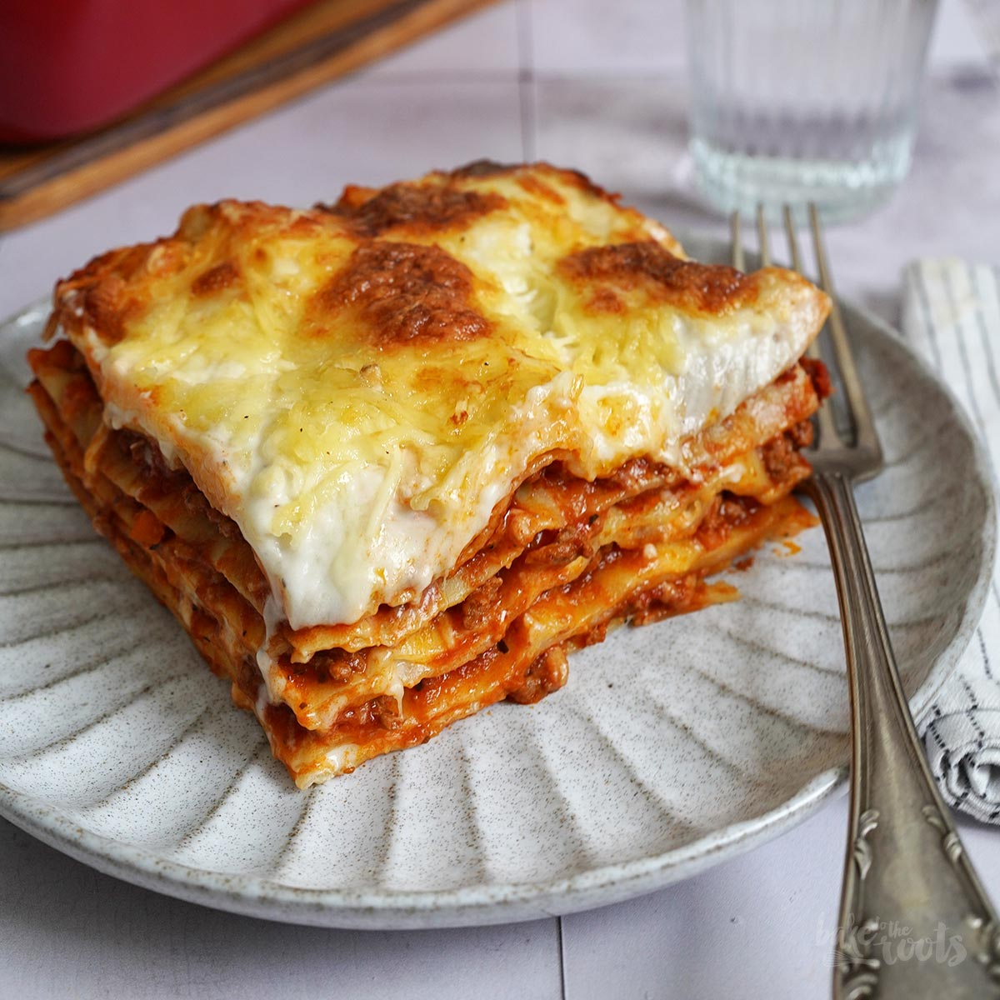

Lasagna
Home

Description
This is a simple lasagna recipe
that is easy to make and delicious to eat.
It is a classic Italian dish that is perfect for family dinners
or special occasions.
Ingredients
- 1 pound ground beef
- 2 tablespoons olive oil
- 1 onion, diced
- 3 cloves garlic, minced
- 1 can (28 oz) crushed tomatoes
- 1 teaspoon dried oregano
- 1 teaspoon dried basil
- 1/2 teaspoon salt
- 1/4 teaspoon black pepper
- 12 lasagna noodles
- 16 oz ricotta cheese
- 2 cups shredded mozzarella cheese
- 1/4 cup grated Parmesan cheese
Steps
- Preheat the oven to 375°F (190°C).
- Cook the ground beef in a large skillet over medium heat until browned.
- Drain the excess fat and return the beef to the skillet.
- Add the olive oil, onion, and garlic. Cook until the onion is translucent.
- Stir in the crushed tomatoes, oregano, basil, salt, and pepper. Simmer for 15 minutes.
- Cook the lasagna noodles according to the package instructions.
- Preheat the oven to 375°F (190°C).
- Spread a thin layer of the meat sauce in the bottom of a 9x13 inch baking dish.
- Layer half of the noodles on top of the sauce.
- Spread half of the ricotta cheese over the noodles.
- Repeat layers, ending with a layer of meat sauce on top.
- Cover with aluminum foil and bake for 25 minutes.
- Remove the foil and bake for an additional 10 minutes or until the cheese is bubbly and golden brown.